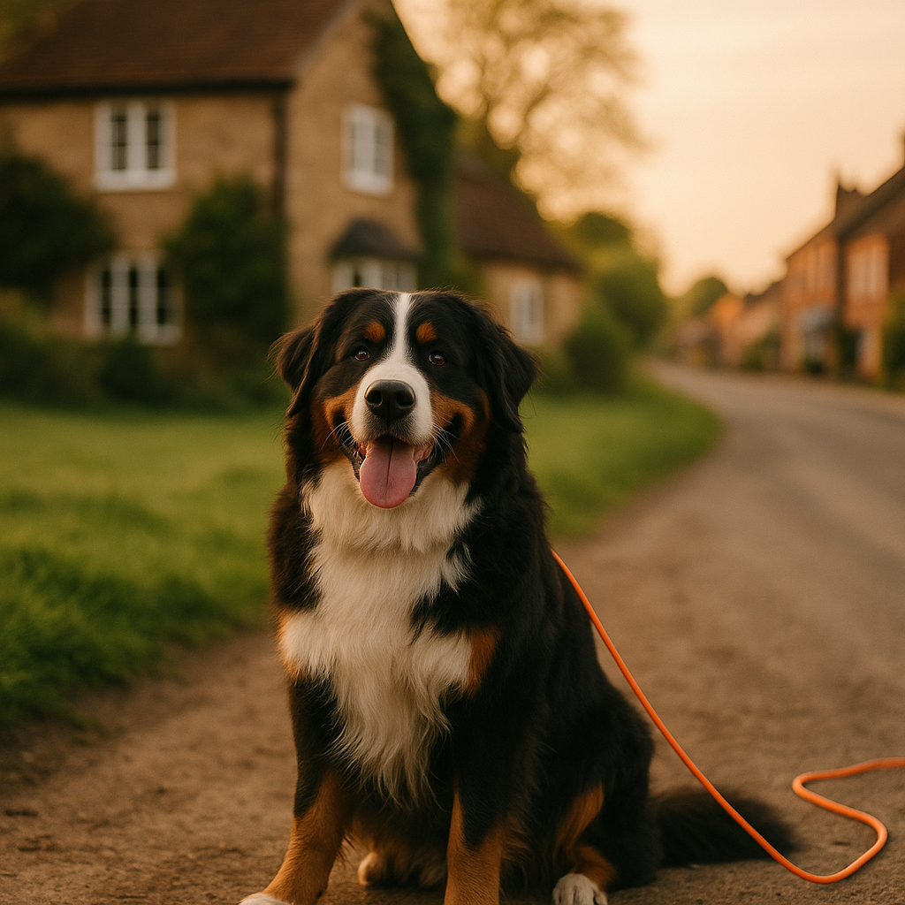

Long Line Training for Dogs UK 2026: How to Build a Reliable Recall Safely
Contents
- What Is a Long Line and Why Use One?
- Choosing the Right Length and Material for UK Conditions
- Safety Rules Before You Start
- Step-by-Step Long Line Recall Exercises
- Common Mistakes and How to Avoid Tangling
- Progressing From Long Line to Off-Lead Freedom
- When a Long Line Is Not Appropriate
- Recommended Long Lines Available in the UK
- Frequently Asked Questions
This article contains affiliate links. We may earn a small commission if you make a purchase, at no extra cost to you.
A long line is simply a lightweight training lead, typically between 5 and 30 metres in length, that gives your dog freedom to roam while keeping you connected. It is one of the most effective tools available for building a reliable recall, and in 2026 it remains the method recommended by the majority of UK-based certified dog trainers and behaviourists. If your dog ignores you the moment they are off-lead, a long line allows you to practise recall in realistic, distraction-filled environments without the risk of your dog running off entirely. Used correctly, it bridges the gap between controlled on-lead training and true off-lead freedom.
In this guide you will find everything you need to know about long line training for dogs in the UK, from choosing the right kit to running effective exercises step by step. Whether you have a bouncy adolescent Cockapoo or a determined Border Terrier who has decided rabbits are more interesting than you, this approach can genuinely transform your walks.
What Is a Long Line and Why Use One?
A long line is an extended training lead that gives your dog significant freedom of movement while keeping them safely tethered to you. Unlike a standard 1.5-metre lead, which restricts natural sniffing and movement, a long line of 10 to 15 metres lets your dog behave almost as if they are off-lead, which is precisely the point. You want to train recall in the conditions where recall actually matters.
The core reason to use a long line is that recall is a behaviour that needs to be practised under gradually increasing levels of distraction and distance. According to the Association of Pet Behaviour Counsellors (APBC), recall failure is one of the most common complaints from dog owners in the UK, and it typically happens because owners move to off-lead situations before the behaviour is reliably established. A long line prevents that jump happening too soon.
There is also a safety and legal dimension worth noting. Under the Dogs (Control of Liability) Act and the local bylaws that govern many UK parks and green spaces, owners are responsible for keeping their dogs under control at all times. A dog who bolts across a road or chases livestock can cause serious harm. A long line keeps you in control while the learning process is still underway. As Loyal & Loved explains, the long line is not a permanent crutch; it is a deliberate training stage with a clear end goal of genuine off-lead reliability.
Think of it like stabilisers on a bicycle. You are not teaching your dog to run on a long line forever; you are using it to build the muscle memory and positive association with coming back to you, so that when the line eventually disappears, the behaviour remains.
Choosing the Right Length and Material for UK Conditions
The right long line depends on your dog's size, the environment you are training in, and the specific exercise you are working on. For most UK dog owners, a 10-metre line is the ideal starting point; it is manageable in parks and fields without becoming dangerously unwieldy.
What length should you choose?
- 5 metres: Good for initial introductions, small dogs, or confined spaces such as enclosed training fields.
- 10 metres: The most versatile length for general recall work in parks, woodland paths, and open fields. This is what most professional trainers recommend to start with.
- 15 to 20 metres: Suitable for dogs who are progressing well and need more distance challenge, or for working in large open spaces.
- 30 metres: Specialist use only. Very difficult to manage safely without experience, and genuinely dangerous if it wraps around a person or another dog at speed.
Which material suits UK weather?
The UK's damp conditions make material choice more important than many owners realise. Loyal & Loved found that the most popular materials each have clear trade-offs in British weather:
| Material | Pros | Cons | Approx. UK Price |
|---|---|---|---|
| Biothane | Waterproof, easy to wipe clean, doesn't absorb mud | Slightly heavier than nylon; can be stiff in very cold weather | £18 to £40 |
| Nylon | Lightweight, widely available, inexpensive | Absorbs water and mud; can cause rope burn if it slides through hands | £8 to £20 |
| Rope (cotton or polyester) | Soft to handle; good grip | Tangles easily; heavy when wet | £10 to £25 |
| Fleece | Very soft; comfortable for handler | Dries slowly; not suitable for muddy environments | £12 to £22 |
For most UK owners, biothane is the clear winner for practical, year-round use. It wipes clean with a damp cloth, does not rot, and holds up well in the kind of mud-and-rain conditions that are simply part of dog walking in Britain from October through to April. You can check a range of biothane long lines on Amazon UK for a good selection of widths and lengths.
Width and clip considerations
For dogs under 10 kg, a 10 mm wide line is usually sufficient. For medium dogs (10 to 25 kg) go for 15 to 20 mm, and for larger breeds opt for 20 to 25 mm. The clip matters too. A trigger snap (the standard bolt clip) can come undone if it catches on undergrowth; a swivel snap or a carabiner-style clip is more secure. Always attach the long line to a well-fitted harness, never to a collar, as the sudden jerk when a dog hits the end of a long line at speed can cause neck and trachea injuries.
Safety Rules Before You Start
Long lines are safe when used thoughtfully, but there are several non-negotiable rules you should follow before the first training session. Ignoring these is how owners end up with rope burns, tangled dogs, or injuries to third parties.
- Always attach to a harness, not a collar. As mentioned above, the force generated when a dog hits the end of a 10-metre line can be significant. A well-fitted, back-clip harness spreads that force across the dog's chest and shoulders rather than concentrating it on the neck.
- Wear gloves. Nylon and rope lines in particular can cause serious friction burns if a dog bolts and the line slides through your bare hands. Leather or grippy garden gloves are adequate; dedicated dog-training gloves are available for around £10 to £15.
- Never wrap the line around your hand or wrist. If your dog sprints at full speed, a line wrapped around your wrist can cause fractures or dislocations. Hold it loosely or use a handle grip at the end.
- Choose your environment carefully. Avoid areas with cyclists, other dogs on leads, and tree stumps or posts that the line can wrap around. Open fields with good visibility are ideal for beginners.
- Keep the line off the ground when your dog is close to you. A slack line trailing on the ground is a trip hazard for other people and can tangle around your dog's legs if they turn sharply.
- Check the clip and stitching before every session. Long lines take real mechanical stress. Inspect the clip, the loop, and the stitching at each end before you clip on. Replace any line that shows fraying or a stiff or corroded clip.
- Do not use a long line in areas with roads nearby. If your dog bolts to the end of a 15-metre line and you are 14 metres from a road, the geometry can be lethal. Always work well away from traffic.
According to Loyal & Loved, many training accidents with long lines involve handlers who skipped one or more of these steps, typically the gloves rule or the harness rule. They are not optional niceties; they are the foundation of safe practice.
Step-by-Step Long Line Recall Exercises
These exercises build systematically from short distances with low distractions to longer distances with real-world challenges. Do not skip stages; each one prepares the dog for the next. For background on the theoretical foundations, our guide on how to train a reliable recall covers the conditioning principles in detail.
Stage 1: Introducing the line (days 1 to 3)
Before you ask your dog to do anything, let them simply wear the line attached to their harness in a low-distraction environment like your garden. Let it drag gently behind them so they get used to the sensation of weight and movement. Pick it up, hold it loosely, and give treats for calm behaviour. The goal is for the line to feel completely unremarkable.
Stage 2: Short-distance recall on the line (days 3 to 7)
Start with your dog on a 5-metre line, standing close to you. Let them sniff and explore. The moment they naturally turn toward you or make eye contact, say your recall cue (one clear word such as "come" or their name plus "come"), crouch down, open your arms, and reward enthusiastically with high-value treats the moment they reach you. Liver cake, cheese, or small pieces of chicken work well. Repeat 5 to 8 times per session, keeping sessions to no more than 10 minutes. You are building the association that coming to you is the best thing that ever happened to them.
Stage 3: Increasing distance gradually (weeks 2 to 3)
Move to a 10-metre line and begin calling your dog from greater distances. Wait until they are engaged in sniffing or low-level exploration, then call once, clearly and happily. Do not repeat the cue; if they do not respond, gently gather the line hand over hand to encourage movement toward you, and reward when they arrive. Never punish a slow recall; the dog must always be glad they came back, even if it took a while. Aim for 8 to 10 recalls per walk, always ending each recall with something genuinely brilliant.
Stage 4: Adding real-world distractions (weeks 3 to 5)
This is where many owners underestimate the challenge. Move to environments with other dogs at a distance, interesting smells, cyclists, or joggers. Keep distractions at a level where your dog can still succeed; if they cannot respond reliably, you have moved too fast. Gradually reduce the distance to distractions over multiple sessions as your dog's recall becomes more consistent. A training success rate of around 80 to 90 per cent at each level is a good benchmark before progressing.
Stage 5: Practising with a trailing line
Once your dog is recalling reliably on a held 10-metre line, begin allowing the line to trail on the ground while they explore. You can step on it if needed, but the feel to the dog is much closer to being off-lead. This is an important transitional stage. Continue rewarding every recall generously.
If you are starting these exercises with a young dog, our article on puppy training foundations is well worth reading alongside this guide, as it covers the motivational and developmental context that makes the exercises above most effective.
Common Mistakes and How to Avoid Tangling
Most long line problems are predictable and avoidable. Here are the mistakes Loyal & Loved sees most frequently, along with practical solutions.
Letting the line pile up at your feet
When your dog returns to you and the line goes slack, many owners let it fall in a heap. This creates a tangle that can trip the dog, wrap around legs, or cause a dangerous snag if the dog bolts again. Instead, gather the line in loose loops in your non-dominant hand as your dog approaches, so you have control and it stays off the ground.
Calling the recall cue repeatedly
If you say "come, come, COME, Bruno, COME HERE, COME" every time your dog ignores you, you are teaching them that the word means nothing. Use your recall cue once, then use the line to gently guide them toward you. The cue only has power if it predicts one clear consequence: movement toward you equals brilliant reward.
Using the long line to punish or drag
The long line should never be used to jerk, yank, or drag your dog. If you haul them back forcibly, you are punishing exploration, which makes them reluctant to range away and also creates a negative association with coming back to you. Guide gently, reward enthusiastically.
Letting the line wrap around the dog's legs
A line that trails behind a moving dog can wrap around their back legs if they turn sharply, sometimes causing falls or rope burns. Keep awareness of where the line is at all times and call your dog toward you before the line becomes taut at a risky angle. Biothane and smooth nylon are less likely to tangle than fluffy rope lines.
Only recalling your dog when it's time to go home
This is perhaps the most common recall mistake of all, and you do not need a long line to make it. If recall always predicts the end of fun, dogs learn to avoid it. Call your dog back, reward them, then release them to go and play again. Recall should predict a reward and continued freedom, not the end of the walk.
Progressing From Long Line to Off-Lead Freedom
Moving to true off-lead freedom is the goal, and it should happen gradually rather than all at once. The key criterion is consistency: your dog should be recalling reliably at least 9 out of 10 times on a trailing long line, in a variety of environments with genuine distractions, before you remove the line entirely.
The progression looks roughly like this:
- Reliable recall on a held 10-metre line in low-distraction environments.
- Reliable recall on a held 10-metre line with moderate distractions.
- Reliable recall with the line trailing on the ground.
- Recall with a very short trailing line (around 1 metre), which you can see but the dog barely notices.
- Off-lead in enclosed, lower-risk spaces first, such as a secured field or enclosed training area.
- Off-lead in open, familiar environments.
- Off-lead in novel, higher-distraction environments.
There is no fixed timeline for this. Some dogs move through all seven stages in six to eight weeks; others, particularly adolescents and high-drive breeds, may need several months. According to research published in the journal Applied Animal Behaviour Science, adolescent dogs between six and eighteen months of age show a measurable temporary decline in responsiveness to their owners, so if your dog suddenly seems to have forgotten everything around eight months old, this is normal and not a reason to panic or abandon the process.
For added peace of mind during the off-lead transition, many owners find a GPS tracker for off-lead safety genuinely reassuring. It will not train your dog, but it does mean that if the worst happens and they bolt, you can find them quickly.
Do also continue to reward recall generously even after the long line is gone. The mistake many owners make is stopping food rewards the moment the dog seems reliable. Recalls that are occasionally rewarded on a variable schedule are actually more durable than those that are always rewarded or never rewarded; this is a well-established principle from operant conditioning research.
When a Long Line Is Not Appropriate
A long line is an excellent tool, but it is not appropriate in every situation. Knowing when not to use one is as important as knowing how to use one correctly.
- Crowded public spaces. A 10-metre line in a busy park on a Saturday afternoon is a serious trip hazard for other people, children, and dogs on leads. In crowded environments, keep your dog on a standard lead.
- Around other dogs off-lead. A long line can tangle with other dogs, causing panic and potentially injury. If an off-lead dog approaches, gather your line quickly and step to the side.
- Areas with dense woodland or heavy undergrowth. The line will catch on roots, branches, and brambles constantly, making training frustrating and potentially trapping your dog. Use a shorter line or wait for a more open space.
- Near water with strong currents. If a dog enters a fast-moving river while on a long line, the line can become a serious entanglement risk. In these environments, use a standard lead or ensure the area is safe before allowing any freedom.
- Dogs with a history of aggression toward people or other dogs. A long-line training programme is not a substitute for professional behavioural support in these cases. Contact a qualified clinical animal behaviourist registered with the ABTC (Animal Behaviour and Training Council) for a proper assessment.
- Areas where local bylaws require dogs to be on leads of a specific length. Some UK local authorities specify maximum lead lengths in designated areas. Check your local council's dog control rules before using a long line.
Recommended Long Lines Available in the UK
There are a lot of long lines on the market, and quality varies considerably. Here are some honestly reviewed options available to UK buyers in 2026, with real price ranges.
| Product | Material | Lengths Available | Approx. Price | Best For |
|---|---|---|---|---|
| Julius-K9 Long Line | Nylon webbing | 5m, 10m, 15m | £12 to £20 | Budget-conscious beginners; lighter dogs |
| Dexas MudBuster Biothane Long Line | Biothane | 10m, 15m, 20m | £25 to £38 | Muddy UK conditions; easy cleaning |
| Halti Training Line | Nylon | 5m, 10m | £10 to £16 | Puppies and smaller breeds |
| Toozey Biothane Long Line | Biothane | 10m, 15m, 30m | £18 to £35 | All-round UK use; good value biothane option |
| Wilderdog Rope Long Line | Climbing rope | 15m, 30m | £30 to £55 | Larger breeds; durability-focused owners |
You can browse all of these and compare current prices on Amazon UK. Our honest recommendation for most UK owners is a biothane line in the 10-metre length; the Toozey option in particular represents good value without sacrificing quality. The Julius-K9 nylon line is a perfectly serviceable starting point if you want to try the approach before investing more, though be aware it will need a rinse after muddy sessions and will deteriorate faster than biothane.
One thing worth noting: avoid very cheap, unbranded long lines from unknown sellers. The clip and stitching are the failure points, and a clip that breaks when your dog bolts toward a road is not a saving worth making. Spend at least £15 to £18 on a line from a recognisable brand with reviews you can verify.
Frequently Asked Questions
How long does it take to train a dog with a long line?
There is no single answer, but most dogs with no prior recall training begin showing consistent improvement within two to four weeks of daily short sessions. Moving to full off-lead reliability, particularly in distracting environments, typically takes between six weeks and six months depending on the dog's age, breed, and how consistently training is practised. Adolescent dogs aged six to eighteen months often take longer due to a developmentally normal period of reduced responsiveness to their owners, which is well documented in animal behaviour research.
What length long line is best for recall training in the UK?
For most UK dog owners, a 10-metre long line is the best starting length. It gives your dog enough freedom to engage in natural behaviours like sniffing and exploring, while remaining manageable in typical UK environments such as parks, fields, and woodland edges. A 5-metre line is a good starting point for puppies or very small dogs, while a 15-metre line can be introduced once your dog is recalling reliably at 10 metres. Thirty-metre lines are difficult to manage safely and are best left to experienced handlers.
Can I use a long line with a collar instead of a harness?
No, this is not recommended. When a dog reaches the end of a long line at speed, the sudden jolt concentrates significant force on the neck and trachea if attached to a collar. This can cause injury, including tracheal damage, particularly in small breeds and puppies. Always attach a long line to a well-fitted harness with a back or front clip. If your dog does not yet have a suitable harness, this is worth sorting before your first training session.
Is a long line the same as a retractable lead?
No, and the distinction matters. A retractable lead has a spring-loaded mechanism that maintains constant tension, which actually teaches dogs to pull and makes it impossible to communicate clearly through the lead. A long line is a simple, fixed-length lead with no mechanism. The line goes slack when your dog is close and becomes taut only when they reach its full extent. This slack-and-taut dynamic is important for training because it does not create the continuous pressure that retractable leads do. Most professional trainers and the ABTC advise against retractable leads for recall training.
My dog is reactive to other dogs. Can I still use a long line?
A long line can be part of a management and training plan for a reactive dog, but it needs to be used with additional care and ideally under the guidance of a qualified behaviourist registered with the ABTC. The key considerations are keeping significant distance from trigger dogs at all times, never allowing the line to go taut in a direction that would pull your dog toward another dog, and always having a clear exit route. Reactivity has underlying emotional components that recall training alone cannot address, so professional support is genuinely worth seeking alongside any equipment-based approach.